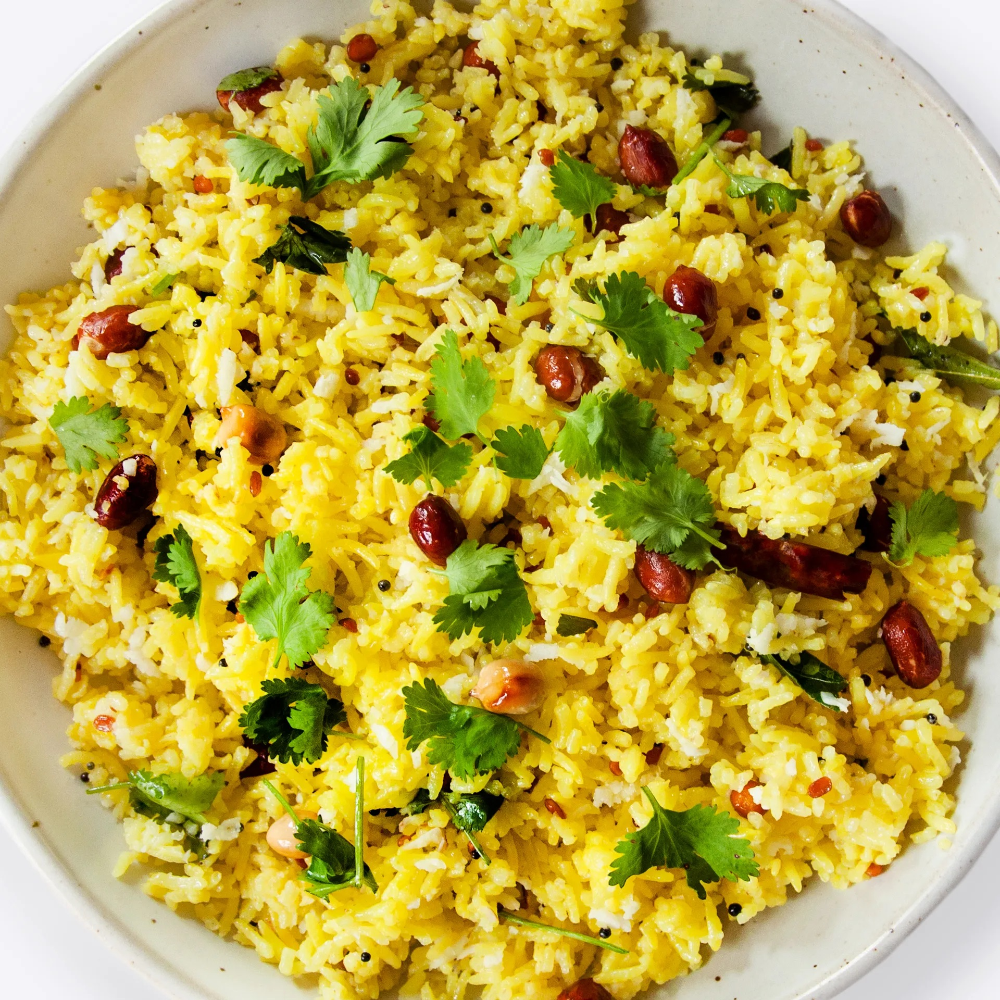

Chitranna

Description
Chitranna (Kannada: ಚಿತ್ರಾನ್ನ; also known as lemon-rice) is a rice-based dish widely prepared in South India. It is prepared by mixing cooked rice with a special seasoning called Oggarane or Gojju.
Characteristic for the seasoning are mustard seeds, fried lentils, peanuts, curry leaves, chillies, lemon juice and other optional items such as scrapes of unripe mango.
Added Turmeric powder gives Chitranna its yellow color. Garlic and onions are also used in the seasoning by some, although traditionally they do not form part of the recipe.
The dish is especially popular in the south Indian state of Karnataka, where it has become a part of the daily diet
INGREDIENTS
- 3 large cups cooked rice
- ½ lemon juice 3tbsp
- 2 tbsp groundnut oil
- ¾ tsp mustard seeds
- ½ tsp cumin seeds
- 1 tsp gram dal
- ¾ tsp split urad dal
- 3 tbsp roasted peanuts
- 1 tsp chopped ginger
- 2 red chillies
- 1 green chilli
- Few curry leaves
- ½ cup chopped onion
- 1 pinch asafoetida
- ½ tsp turmeric powder
- 1 tsp salt
- Few coriander leaves
INSTRUCTIONS
Preparation:
Squeeze the juice of a half lemon. We need around 3 tbsp of lemon juice.
Chop a half cup of onion and 1 tsp of ginger and keep ready.
Recipe:
- In a pan, heat 3tbsp of groundnut oil.
- Add 3/4 tsp of mustard seeds and 1/2 tsp of cumin seeds.
- Let the seeds splutter and add 1 tsp of gram dal and ¾ tsp split urad dal. Saute few seconds till dal becomes golden brown in color.
- Next, add 3 tbsp of roasted groundnuts and saute a few seconds without burning dal.
- Slit one green chili and split two red chillies, add them with 1tsp ginger.
- Add a few fresh curry leaves.
- Add 1/2 cup of chopped onions and saute them until soft. Also, add 1/4 tsp of asafoetida (hing).
- Next add 1/2 tsp of turmeric powder, 1 tsp of salt as per taste.
- Saute for few seconds to dissolve the salt completely.
- Finally, add the juice of half lemon and switch off the stove immediately.
- Sprinkle few chopped coriander leaves for freshness.
- Cooking further may make the lemon juice bitter.
- Now add three cups of cooked rice and mix thoroughly.
- Leave this undisturbed for atleast 30 minutes before serving so that the rice gets all the flavor of lemon juice along with spices.
Back